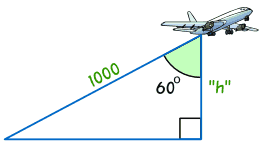
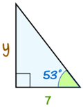
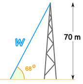

Finding a Side in a Right-Angled Triangle
Find a Side when we know another Side and Angle
We can find an unknown side in a right-angled triangle when we know:
- one length, and
- one angle (apart from the right angle, that is).

Example: Depth to the Seabed
The ship is anchored on the seabed.
We know:
- the cable length (30 m), and
- the angle the cable makes with the seabed
So we should be able to find the depth!
But How?
The answer is to use Sine, Cosine or Tangent!
But Which One?
Which one of Sine, Cosine or Tangent to use?

To find out which, first we give names to the sides:
- Adjacent is adjacent (next to) to the angle,
- Opposite is opposite the angle,
- and the longest side is the Hypotenuse.
Now, for the side we already know and the side we are trying to find, we use the first letters of their names and the phrase "SOHCAHTOA" to decide which function:
SOH... |
Sine: sin(θ) = Opposite / Hypotenuse | |
...CAH... |
Cosine: cos(θ) = Adjacent / Hypotenuse | |
...TOA |
Tangent: tan(θ) = Opposite / Adjacent |
Like this:
Example: Depth to the Seabed (Continued)
Find the names of the two sides we are working on:
- the side we know is the Hypotenuse
- the side we want to find is Opposite the angle (check for yourself that "d" is opposite the angle 39°)
Now use the first letters of those two sides (Opposite and Hypotenuse) and the phrase "SOHCAHTOA" which gives us "SOHcahtoa", which tells us we need to use Sine:
Sine: sin(θ) = Opposite / Hypotenuse
Now put in the values we know:
sin(39°) = d / 30
And solve that equation!
But how do we calculate sin(39°) ... ?
 |
Use your calculator. |
sin(39°) = 0.6293...
So now we have:
0.6293... = d / 30
Now we rearrange it a little bit, and solve:
The depth the anchor ring lies beneath the hole is 18.88 m
Step By Step
These are the four steps to follow:
- Step 1 Find the names of the two sides we are using, one we are trying to find and one we already know, out of Opposite, Adjacent and Hypotenuse.
- Step 2 Use SOHCAHTOA to decide which one of Sine, Cosine or Tangent to use in this question.
- Step 3 For Sine write down Opposite/Hypotenuse, for Cosine write down Adjacent/Hypotenuse or for Tangent write down Opposite/Adjacent. One of the values is the unknown length.
- Step 4 Solve using your calculator and your skills with Algebra.
Examples
Let’s look at a few more examples:

Example: find the height of the plane.
We know the distance to the plane is 1000
And the angle is 60°
What is the plane's height?
Careful! The 60° angle is at the top, so the "h" side is Adjacent to the angle!
- Step 1 The two sides we are using are Adjacent (h) and Hypotenuse (1000).
- Step 2 SOHCAHTOA tells us to use Cosine.
- Step 3 Put our values into the Cosine equation:
cos 60° = Adjacent / Hypotenuse
= h / 1000
- Step 4 Solve:
The height of the plane = 500 meters

Example: Find the length of the side y:
- Step 1 The two sides we are using are Opposite (y)
and Adjacent (7).
- Step 2 SOHCAHTOA tells us to use Tangent.
- Step 3 Put our values into the tangent function:
tan 53° = Opposite/Adjacent
= y/7
- Step 4 Solve:
Side y = 9.29

Example: Radio Mast
There is a mast that is 70 meters high.
A wire goes to the top of the mast at an angle of 68°.
How long is the wire?
- Step 1 The two sides we are using are Opposite (70) and Hypotenuse (w).
- Step 2 SOHCAHTOA tells us to use Sine.
- Step 3 Write down:
sin 68° = 70/w
- Step 4 Solve:
The unknown length is on the bottom (the denominator) of the fraction!
So we need to follow a slightly different approach when solving:
The length of the wire = 75.5 m